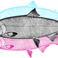

P
Portada
Issue #1
1

Un tenido de rosa y naranja
2
El hombre que vio caer todos los callos
3
Fecha de Caducidad
4
Chicles Un negocio multimillonario
5
La Patria fue mesera
6

San Juan de Dios, el mercado de los caldos populares
7

Los hijos que cuentan historias
8
La historia de Juan y los mil hoteles
9
La iguana
10